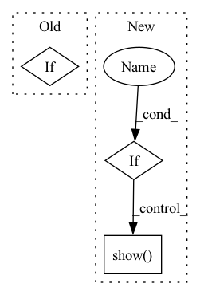

Pattern ID :30981
Before Change
forecast = m.predict(future)
fig1 = m.plot(forecast, plotting_backend="plotly")
if PLOT:
fig1.show()
After Change
fig3 = m.plot(forecast, plotting_backend="plotly")
fig4 = m.plot_components(forecast, plotting_backend="plotly")
if PLOT :
fig1.show()
fig2.show()
fig3.show()
fig4.show()
In pattern: SUPERPATTERN
Frequency: 4
Non-data size: 3
Instances Fragment ID: 91029615
Project Name: ourownstory/neural_prophet
Commit Name: f7e09e428690cd39ffd71c90c57a66f7b1c2b648
Time: 2022-10-18
Author: 76744817+LeonieFreisinger@users.noreply.github.com
File Name: tests/test_plotting.py
M Class Name: AnonimousClass
N Class Name: AnonimousClass
M Method Name: test_plotly_uncertainty(0)
N Method Name: test_plotly_uncertainty(0)
M Parent Class:
N Parent Class:
M File Name: tests/test_plotting.py
N File Name: tests/test_plotting.py
M Start Line: 376
M End Line: 377
N Start Line: 368
N End Line: 392
Before Change
if tp:
cv2.rectangle(img, (bb[0], bb[1]), (bb[2], bb[3]), (0, 1, 0)) // tp
fig.suptitle(cls + "_tp_"+ str(conf))
elif After Change
fig.suptitle(cls + "_tp_"+ str(conf))
plt.imshow(img)
plt.show()
elif plt.show()
else:
if conf > 0.5:
fig = plt.figure()
cv2.rectangle(img, (bb[0], bb[1]), (bb[2], bb[3]), (1, 0, 0)) // fp Fragment ID: 91029622
Project Name: ze-yang/context-transformer
Commit Name: cd60ca6b05edb2e3892a65e7c78de2d7956b8101
Time: 2019-05-20
Author: 981435961@qq.com
File Name: data/voc_eval.py
M Class Name: AnonimousClass
N Class Name: AnonimousClass
M Method Name: det_visualize(8)
N Method Name: det_visualize(8)
M Parent Class:
N Parent Class:
M File Name: data/voc_eval.py
N File Name: data/voc_eval.py
M Start Line: 225
M End Line: 245
N Start Line: 249
N End Line: 284
Before Change
for doc in resp.data.docs:
_doc = Document(doc)
print(f"{_doc.id[:10]}, buffer: {len(_doc.buffer)}, embed: {_doc.embedding.shape}, uri: {_doc.uri[:20]}, chunks: {len(_doc.chunks)}, matches: {len(_doc.matches)}")
if _doc.matches:
for m in _doc.matches:
print(f"\t+- {m.id[:10]}, score: {m.scores["doc_score"].value}, text: {m.text}, modality: {m.modality}, uri: {m.uri[:20]}")
After Change
print(f"\t+- {m.id[:10]}, score: {m.scores["cosine"].value}, text: {m.text}, modality: {m.modality}, uri: {m.uri[:20]}")
// Text doc matches are images
print("Closest matches for the search text:")
if text_doc.matches :
for m in text_doc.matches:
print(f"\t+- {m.id[:10]}, score: {m.scores["cosine"].value}, modality: {m.modality}, uri: {m.uri[:20]}, blob: {len(m.blob)}")
import matplotlib.pyplot as plt
plt.imshow(m.blob)
plt.show()
def index(data_set, num_docs, request_size):
flow = Flow().load_config("flows/flow-index.yml") Fragment ID: 91029617
Project Name: jina-ai/examples
Commit Name: 4de569187f138fc79cc6c08852f13315c1e545bc
Time: 2021-08-17
Author: jakob.kruse@jina.ai
File Name: cross-modal-search/app.py
M Class Name: AnonimousClass
N Class Name: AnonimousClass
M Method Name: check_query_result(1)
N Method Name: check_query_result(1)
M Parent Class:
N Parent Class:
M File Name: cross-modal-search/app.py
N File Name: cross-modal-search/app.py
M Start Line: 38
M End Line: 45
N Start Line: 33
N End Line: 52
Before Change
posterior_samples = deepcopy(mod._posterior_samples)
if len(mod._positive_regressor_col) > 0:
for i, regressor in enumerate(mod._positive_regressor_col):
posterior_samples[regressor] = posterior_samples["pr_beta"][:,i]
if len(mod._regular_regressor_col) > 0:After Change
if path:
plt.savefig(path)
if is_visible:
plt.show()
else:
plt.close()
return axes Fragment ID: 91029619
Project Name: uber/orbit
Commit Name: 7334ba57571a86b1fb85af4f02f4da9289cec303
Time: 2021-02-12
Author: edwinng@uber.com
File Name: orbit/diagnostics/plot.py
M Class Name: AnonimousClass
N Class Name: AnonimousClass
M Method Name: plot_posterior_params(11)
N Method Name: plot_posterior_params(9)
M Parent Class:
N Parent Class:
M File Name: orbit/diagnostics/plot.py
N File Name: orbit/diagnostics/plot.py
M Start Line: 255
M End Line: 271
N Start Line: 254
N End Line: 398